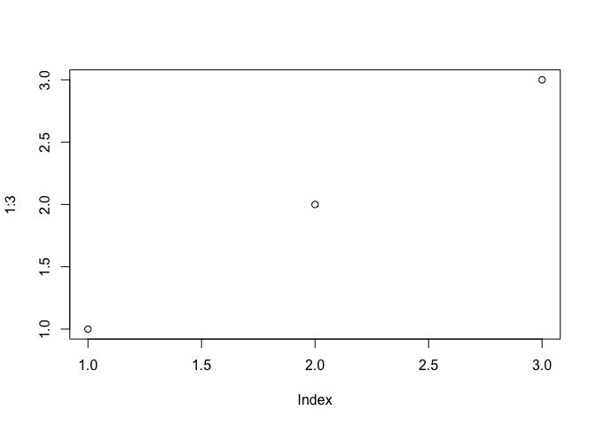
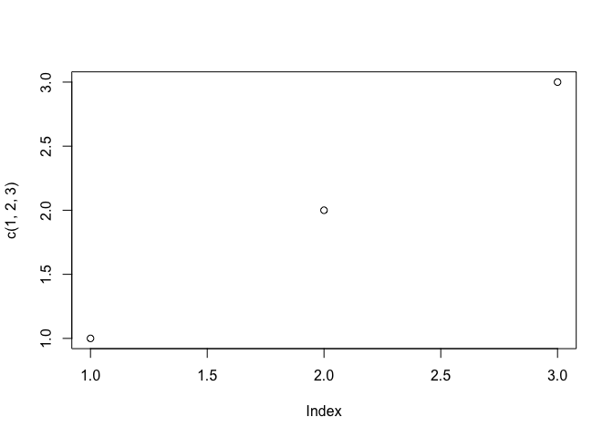

John Mount, Win-Vector LLC 2017-11-29
seplyr is an R package that supplies improved standard evaluation interfaces for many common data wrangling tasks.
The core of seplyr is a re-skinning of dplyr's to seplyr conventions (similar to how stringr re-skins the implementing package stringi).
"Standard evaluation" is the name we are using for the value oriented calling convention found in many programming languages. The idea is: functions are only allowed to look at the values of their arguments and not how those values arise (i.e., they can not look at source code or variable names). This evaluation principle allows one to transform, optimize, and reason about code.
It is what let's us say the following two snippets of code are equivalent.
x <- 4; sqrt(x)x <- 4; sqrt(4)The mantra is:
"variables can be replaced with their values."
Which is called referential transparency.
"Non-standard evaluation" is the name used for code that more aggressively inspects its environment. It is often used for harmless tasks such as conveniently setting axis labels on plots. For example, notice the following two plots have different y-axis labels (despite plotting identical values).
plot(x = 1:3)
plot(x = c(1,2,3))
dplyr and seplyrThe dplyr authors appear to strongly prefer a non-standard evaluation interface. Many in the dplyr community have come to think a package such as dplyr requires a non-standard interface. seplyr started as an experiment to show this is not actually the case.
Syntactically the packages are deliberately similar.
We can take a dplyr pipeline:
suppressPackageStartupMessages(library("dplyr"))
starwars %>%
select(name, height, mass) %>%
arrange(desc(height)) %>%
head()## # A tibble: 6 x 3
## name height mass
## <chr> <int> <dbl>
## 1 Yarael Poof 264 NA
## 2 Tarfful 234 136
## 3 Lama Su 229 88
## 4 Chewbacca 228 112
## 5 Roos Tarpals 224 82
## 6 Grievous 216 159And re-write it in seplyr notation:
library("seplyr")## Loading required package: wraprstarwars %.>%
select_se(., c("name", "height", "mass")) %.>%
arrange_se(., "desc(height)") %.>%
head(.)## # A tibble: 6 x 3
## name height mass
## <chr> <int> <dbl>
## 1 Yarael Poof 264 NA
## 2 Tarfful 234 136
## 3 Lama Su 229 88
## 4 Chewbacca 228 112
## 5 Roos Tarpals 224 82
## 6 Grievous 216 159For the common dplyr-verbs (excluding mutate(), which we will discuss next) all the non-standard evaluation is saving us is a few quote marks and array designations (and we have ways of getting rid of the need for quote marks). In exchange for this small benefit the non-standard evaluation is needlessly hard to program over. For instance in the seplyr pipeline it is easy to accept the list of columns from an outside source as a simple array of names.
Until you introduce a substitution system such as rlang or wrapr::let() (which we recommend over rlang and publicly pre-dates the public release of rlang) you have some difficulty writing re-usable programs that use the dplyr verbs over "to be specified later" column names.
We are presumably not the only ones who considered this a limitation:
seplyr is an attempt to make the standard interfaces the primary interfaces.
mutate()The earlier "standard evaluation costs just a few quotes" becomes a bit strained when we talk about the dplyr::mutate() operator. It doesn't seem worth the effort unless you get something more in return. In seplyr 0.5.0 we introduced "the something more": planning over and optimizing dplyr::mutate() sequences.
A seplyr mutate looks like the following:
starwars %.>%
select_se(., c("name", "height", "mass")) %.>%
mutate_se(., c(
"height" := "height + 1",
"mass" := "mass + 1",
"height" := "height + 2",
"mass" := "mass + 2",
"height" := "height + 3",
"mass" := "mass + 3"
)) %.>%
arrange_se(., "name") %.>%
head(.)## # A tibble: 6 x 3
## name height mass
## <chr> <dbl> <dbl>
## 1 Ackbar 186 89
## 2 Adi Gallia 190 56
## 3 Anakin Skywalker 194 90
## 4 Arvel Crynyd NA NA
## 5 Ayla Secura 184 61
## 6 Bail Prestor Organa 197 NAseplyr::mutate_se() always uses ":=" to denote assignment (dplyr::mutate() prefers "=" for assignment, except in cases where ":=" is required).
The advantage is: once we are go to the trouble to capture the mutate expressions we can treat them as data and apply procedures to them. For example we can re-group and optimize the mutate assignments.
plan <- partition_mutate_se(
c("name" := "tolower(name)",
"height" := "height + 0.5",
"height" := "floor(height)",
"mass" := "mass + 0.5",
"mass" := "floor(mass)"))
print(plan)## $group00001
## name height mass
## "tolower(name)" "height + 0.5" "mass + 0.5"
##
## $group00002
## height mass
## "floor(height)" "floor(mass)"Notice seplyr::partition_mutate_se() re-ordered and re-grouped the assignments so that:
The "safe block" assignments can then be used in a pipeline:
starwars %.>%
select_se(., c("name", "height", "mass")) %.>%
mutate_seb(., plan) %.>%
arrange_se(., "name") %.>%
head(.)## # A tibble: 6 x 3
## name height mass
## <chr> <dbl> <dbl>
## 1 ackbar 180 83
## 2 adi gallia 184 50
## 3 anakin skywalker 188 84
## 4 arvel crynyd NA NA
## 5 ayla secura 178 55
## 6 bail prestor organa 191 NAThis may not seem like much. However, when using dplyr with a SQL database (such as PostgreSQL or even Sparklyr) keeping the number of dependencies in a block low is critical for correct calculation (which is why I recommend keeping dependencies low). Furthermore, on Sparklyr sequences of mutates are simulated by nesting of SQL statements, so you must also keep the number of mutates at a moderate level (i.e., you want a minimal number of blocks or groups).
Because we are representing mutate assignments as user manipulable data we can also enjoy the benefit of machine generated code. seplyr 0.5.* uses this opportunity to introduce a simple function named if_else_device(). This device uses R's ifelse() statement (which conditionally chooses values in a vectorized form) to implement a more powerful block-if/else statement (which conditionally simultaneously controls blocks of values and assignments; SAS has such a feature).
For example: suppose we want to NA-out one of height or mass for each row of the starwars data. This can be written naturally using the if_else_device.
if_else_device(
testexpr = "runif(n())>=0.5",
thenexprs = "height" := "NA",
elseexprs = "mass" := "NA")## ifebtest_437g7b7to779
## "runif(n())>=0.5"
## height
## "ifelse( ifebtest_437g7b7to779, NA, height)"
## mass
## "ifelse( !( ifebtest_437g7b7to779 ), NA, mass)"Notice the if_else_device translates the user code into a sequence of dplyr::mutate() expressions (using only the weaker operator ifelse()). Obviously the user could perform this translation, but if_else_device automates the record keeping and can even be nested. Also many such steps can be chained together and broken into a minimal sequence of blocks by partition_mutate_se() (not forcing a new dplyr::mutate() step for each if-block encountered).
When we combine the device with the partitioned we get performant database-safe code where the number of blocks is only the level of variable dependence (and not the possibly much larger number of initial value uses that a straightforward non-reordering split would give; note: seplyr::mutate_se() 0.5.1 and later incorporate the partition_mutate_se() in mutate_se()).
starwars %.>%
select_se(., c("name", "height", "mass")) %.>%
mutate_se(., if_else_device(
testexpr = "runif(n())>=0.5",
thenexprs = "height" := "NA",
elseexprs = "mass" := "NA")) %.>%
arrange_se(., "name") %.>%
head(.)## # A tibble: 6 x 4
## name height mass ifebtest_brce3wobarhu
## <chr> <int> <dbl> <lgl>
## 1 Ackbar 180 NA FALSE
## 2 Adi Gallia NA 50 TRUE
## 3 Anakin Skywalker 188 NA FALSE
## 4 Arvel Crynyd NA NA TRUE
## 5 Ayla Secura 178 NA FALSE
## 6 Bail Prestor Organa NA NA TRUEThe value oriented notation is a bit clunkier, but this is offset by it's greater flexibility in terms of composition and working parametrically.
Our group has been using seplyr::if_else_device() and seplyr::partition_mutate_se() to greatly simplify porting powerful SAS procedures to R/Sparklyr/Apache Sparkclusters.
This is new code, but we are striving to supply sufficient initial documentation and examples.